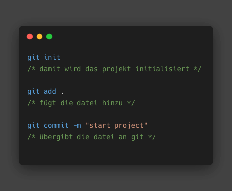
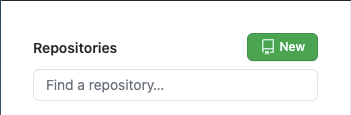
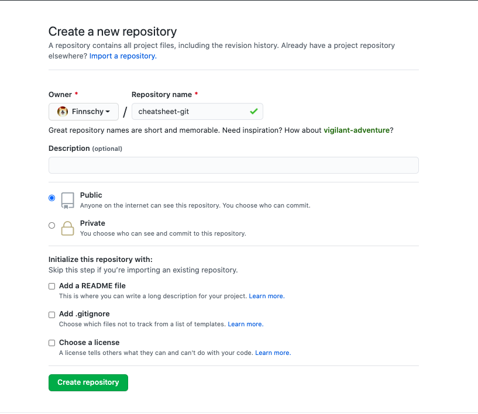
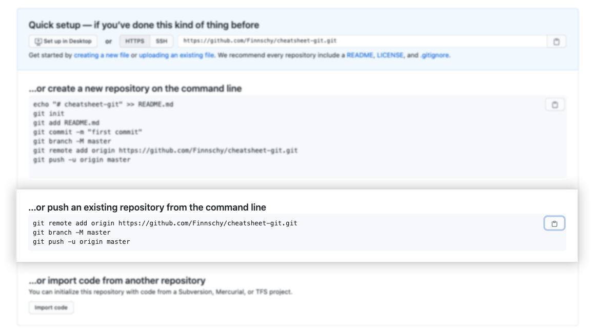

let's git
um mit git los zu legen, brauchen wir drei befehle
für den nächsten schritt gehen wir auf github.com und erstellen ein repository
wir vergeben einen passenden namen für das projekt und klicken auf create repository
daraufhin werden wir von folgender seite begrüßt:
da wir in vscode bereits git initialisiert haben, kopieren wir die befehle aus dem zweiten block, fügen sie in das terminal in vscode ein und bestätigen mit enter.
hinweis: denk daran, regelmäßig mit den bereits bekannten befehlen git add . ,
git commit -m "comment" und git push das projekt auf git zu speichern.